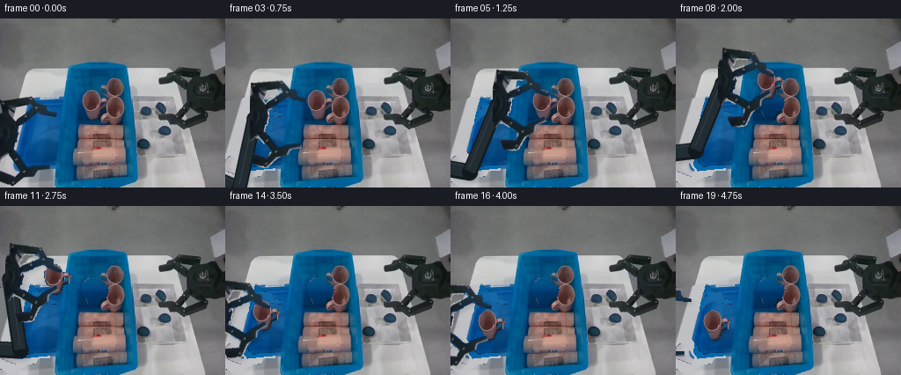
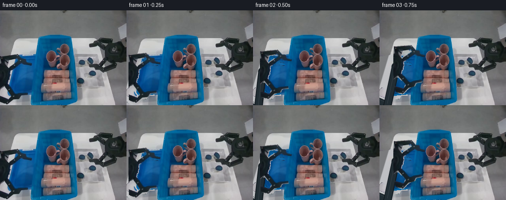

CODING AGENTS AS PIXEL WORLD MODELS
traex/GPT-6.1-Sol · common50_0005
点击播放 · 原生 RGB 像素
逐轮保存的候选
回放视频、检查图与代码变化。
每份候选均可单独播放。实际图片检查记录在下方工具轨迹中。
候选 01播放与检查图
点击播放 · 原生 RGB 像素

展开代码变化
--- 上一保存版本
+++ 本次保存版本
@@ -0,0 +1,195 @@
+"""Deterministic first-image RGB manipulation and rigid pick/place animation.
+No external assets, learned models, or renderer are used.
+"""
+from pathlib import Path
+import math
+import numpy as np
+from PIL import Image, ImageDraw, ImageFilter
+import artifact_io
+
+ROOT=Path(__file__).resolve().parent
+W,H=256,192
+im=np.array(Image.open(ROOT/'first_frame.png').convert('RGB'))
+yy,xx=np.mgrid[:H,:W]
+
+def poly(points):
+ a=Image.new('L',(W,H)); ImageDraw.Draw(a).polygon(points,fill=255)
+ return np.array(a,dtype=float)/255
+
+def dilate(a,n=3):
+ return np.array(Image.fromarray(np.uint8(a*255)).filter(ImageFilter.MaxFilter(n)),dtype=float)/255
+
+def blur(a,r):
+ return np.array(Image.fromarray(np.uint8(np.clip(a,0,1)*255)).filter(ImageFilter.GaussianBlur(r)),dtype=float)/255
+
+# Alpha contours inferred by hand from numerical RGB runs in the sole input.
+arm_region=poly([(0,93),(13,91),(34,88),(40,94),(44,98),(53,98),(54,105),
+ (64,107),(66,111),(58,114),(41,110),(32,116),(23,125),(24,138),
+ (19,148),(19,151),(26,162),(29,166),(55,166),(58,169),(57,174),
+ (45,177),(31,180),(25,185),(19,190),(11,191),(0,184),(0,173),
+ (17,180),(21,172),(16,166),(9,157),(4,155),(0,159)])
+r,g,b=im.astype(float).transpose(2,0,1)
+arm_seed=arm_region*((g<118)&(r<125)&(b-r<43)&(r-g<18))
+arm_mask=dilate(arm_seed,3)*arm_region
+# Split the mechanical jaw assemblies from the central wrist/palm.
+upper_zone=poly([(0,88),(68,88),(68,117),(29,116),(23,125),(16,125),(0,115)])
+lower_zone=poly([(0,153),(8,151),(19,149),(32,164),(60,164),(60,181),(31,183),
+ (19,192),(0,192),(0,173),(17,179),(20,172),(13,165),(0,158)])
+upper=arm_mask*upper_zone
+lower=arm_mask*lower_zone*(1-upper_zone)
+palm=arm_mask*(1-upper_zone)*(1-lower_zone)
+
+mug_region=poly([(102,81),(107,81),(111,84),(114,90),(118,90),(121,91),
+ (123,94),(122,98),(121,102),(117,104),(114,105),(113,110),(110,114),
+ (107,116),(103,115),(100,111),(99,106),(96,104),(94,99),(93,94),
+ (93,89),(96,86),(98,84)])
+# Hole through the ceramic handle must reveal the workspace, not move blue pixels.
+handle_hole=poly([(116,96),(119,96),(120,98),(119,100),(117,100),(116,99)])
+mug_mask=mug_region*(1-handle_hole)
+
+# Clean background for regions newly revealed by the rigid moving objects.
+# Table appearance comes from other unobstructed pixels of this same photo.
+bg=im.astype(float).copy()
+rng=np.random.default_rng(506)
+noise=rng.normal(0,0.6,(H,W,1))
+edge=28-.295*(yy-58)
+table=np.zeros_like(bg)
+for y in range(H):
+ bright=im[y,min(175,W-1)].astype(float)
+ if y<89: bright=im[y,45].astype(float)
+ if y>=89: bright=np.array([192.,193.,196.]) + np.array([1.,1.,1.])*(1.5*math.sin(y*.08))
+ floor=np.array([122,123,125],float) if y>75 else im[y,15].astype(float)
+ t=np.clip((xx[y]-edge[y]+1)/2,0,1)[:,None]
+ table[y]=floor*(1-t)+bright*t
+
+# Hidden portions of the small blue receiving tray. Preserve all already visible pixels.
+outer=poly([(34,89),(64,92),(62,169),(25,173),(20,166),(22,148),(28,110)])
+inner=poly([(36,97),(61,99),(58,164),(26,165),(24,156),(32,106)])
+tray=np.empty_like(bg)
+for y in range(H):
+ sy=int(np.clip(y,116,163)); row=im[sy,42:57].astype(float)
+ c=np.median(row,axis=0)
+ # Match shaded plastic, with a slightly darker inner wall and bright rolled lip.
+ for x in range(W):
+ if outer[y,x]:
+ q=np.array([3,100,166],float)
+ if inner[y,x]:
+ q=c + np.array([0,3,3])*math.sin((x-25)*.075)
+ else:
+ q += np.array([0,5,5])*math.sin(y*.12)
+ tray[y,x]=q
+ else: tray[y,x]=table[y,x]
+restore=table*(1-outer[...,None])+tray*outer[...,None]+noise
+bg=bg*(1-arm_mask[...,None])+restore*arm_mask[...,None]
+
+# Erasing the mug reveals dark blue interior, sampled immediately to its left.
+bg_empty=bg.copy()
+for y in range(79,119):
+ source=im[y,86:93].astype(float)
+ c=np.median(source,axis=0)
+ for x in range(91,125):
+ if mug_region[y,x]:
+ c1=c+np.array([0,-.25,-.3])*(x-92)
+ bg_empty[y,x]=np.clip(c1+noise[y,x],0,255)
+# Feather the background replacement only at the contour, never across fixed objects.
+
+
+def warp(rgb,alpha,translation=(0,0),angle=0,pivot=(0,0),scale=1):
+ """Inverse-mapped rigid planar transformation, with bilinear premultiplied alpha."""
+ theta=math.radians(angle); cs=math.cos(theta); sn=math.sin(theta)
+ px,py=pivot; dx,dy=translation
+ X=(xx-px-dx)/scale; Y=(yy-py-dy)/scale
+ sx=cs*X+sn*Y+px; sy=-sn*X+cs*Y+py
+ x0=np.floor(sx).astype(int); y0=np.floor(sy).astype(int)
+ fx=sx-x0; fy=sy-y0
+ out=np.zeros((H,W,3),float); aout=np.zeros((H,W),float)
+ prem=rgb.astype(float)*alpha[...,None]
+ for ox,oy,weight in [(0,0,(1-fx)*(1-fy)),(1,0,fx*(1-fy)),(0,1,(1-fx)*fy),(1,1,fx*fy)]:
+ xa=x0+ox; ya=y0+oy
+ ok=(xa>=0)&(xa<W)&(ya>=0)&(ya<H)
+ xa=np.clip(xa,0,W-1); ya=np.clip(ya,0,H-1)
+ v=weight*ok
+ aout+=v*alpha[ya,xa]
+ out+=v[...,None]*prem[ya,xa]
+ return out,aout
+
+def blend(dst,sprite):
+ p,a=sprite
+ return dst*(1-a[...,None])+p
+
+# Two rigid, fixed-length forearm links maintain the wrist's connection off-camera.
+def forearm(offset):
+ dx,dy=offset
+ end=np.array([dx+5,dy+134],float)
+ base=np.array([-62,160],float)
+ L1,L2=85.,82.
+ v=end-base; dist=np.linalg.norm(v); u=v/dist
+ a=(L1*L1-L2*L2+dist*dist)/(2*dist)
+ h=math.sqrt(max(0,L1*L1-a*a)); normal=np.array([-u[1],u[0]])
+ elbow=base+a*u+h*normal
+ # The elbow is below/outside the workspace; visible links are cylindrical metal.
+ rgba=Image.new('RGBA',(W*3,H*3)); d=ImageDraw.Draw(rgba)
+ def tube(p1,p2,width):
+ p1=p1*3; p2=p2*3
+ d.line([tuple(p1),tuple(p2)],fill=(17,25,30,255),width=int(width*3))
+ for p in [p1,p2]: d.ellipse((p[0]-width*1.5,p[1]-width*1.5,p[0]+width*1.5,p[1]+width*1.5),fill=(17,25,30,255))
+ d.line([tuple(p1+np.array([0,-3])),tuple(p2+np.array([0,-3]))],fill=(34,45,51,255),width=max(1,int((width-4)*3)))
+ d.line([tuple(p1+np.array([0,-width])),tuple(p2+np.array([0,-width]))],fill=(53,62,69,255),width=3)
+ tube(base,elbow,19); tube(elbow,end,17)
+ arr=np.array(rgba.resize((W,H),Image.Resampling.LANCZOS)).astype(float)
+ a=arr[:,:,3]/255
+ return arr[:,:,:3]*a[...,None],a
+
+motions=[(0,0),(4,-3),(14,-10),(28,-20),(41,-30),(48,-35),(49,-36),
+ (49,-46),(48,-60),(40,-66),(25,-61),(6,-51),(-9,-41),(-13,-25),
+ (-13,-10),(-13,1),(-18,-4),(-27,-12),(-39,-8),(-47,-2)]
+cupmotions=[(0,0)]*7+[(0,-10),(-1,-24),(-9,-30),(-24,-25),(-43,-15),
+ (-58,-5),(-62,11),(-62,26),(-62,37),(-62,37),(-62,37),(-62,37),(-62,37)]
+closeness=[0,.05,.12,.22,.45,.80,1,1,1,1,1,1,1,1,1,1,.62,.25,.07,0]
+frames=[]
+for k in range(20):
+ if k==0:
+ frames.append(im.copy());continue
+ off=motions[k]; close=closeness[k]
+ cupoff=cupmotions[k]
+ canvas=(bg_empty if k>=7 else bg).copy()
+ # Same real photographed cup texture and silhouette throughout transfer.
+ cup=warp(im,mug_mask,cupoff,0,(106,98),1)
+ up=warp(im,upper,off,15*close,(3,114))
+ low=warp(im,lower,off,-27*close,(3,151))
+ body=warp(im,palm,off)
+ shaft=forearm(off) if off[0]>5 else (np.zeros_like(canvas),np.zeros((H,W)))
+ # Soft shadows are projected to the existing workspace; no scene/camera warps.
+ arm_a=np.maximum.reduce([up[1],low[1],body[1],shaft[1]])
+ ash=blur(np.roll(np.roll(arm_a,3,axis=0),3,axis=1),2.4)*.12
+ canvas*=1-ash[...,None]
+ if k>=7:
+ # Raised mug casts a weaker, broader shadow, settling into contact at deposit.
+ elevation=max(0,37-cupoff[1])
+ sh=blur(np.roll(cup[1],int(3+elevation*.14),axis=0),1.4+elevation*.03)
+ canvas*=1-(sh*(.17 if k>=14 else .10))[...,None]
+ canvas=blend(canvas,shaft)
+ canvas=blend(canvas,body)
+ canvas=blend(canvas,up)
+ canvas=blend(canvas,low)
+ if k>=7: canvas=blend(canvas,cup)
+ else:
+ # Preserve the original cup until the fingers have firmly grasped it.
+ canvas=blend(canvas,warp(im,mug_mask))
+ # The rigid end pads are in front of the ceramic at the two contact points.
+ if 3<=k<=16:
+ tipup=upper*(xx>=49)
+ tiplow=lower*(xx>=42)
+ canvas=blend(canvas,warp(im,tipup,off,15*close,(3,114)))
+ canvas=blend(canvas,warp(im,tiplow,off,-27*close,(3,151)))
+ frames.append(np.uint8(np.clip(np.rint(canvas),0,255)))
+frames=np.stack(frames)
+assert frames.shape==(20,192,256,3) and frames.dtype==np.uint8
+assert np.array_equal(frames[0],im)
+artifact_io.save(frames,ROOT)
+# Local candidates are saved for numerical inspection, as required by the contract.
+Image.fromarray(np.uint8(bg)).save(ROOT/'.tmp/background.png')
+Image.fromarray(np.uint8(bg_empty)).save(ROOT/'.tmp/background_empty.png')
+Image.fromarray(np.uint8(arm_mask*255)).save(ROOT/'.tmp/arm_alpha.png')
+Image.fromarray(np.uint8(mug_mask*255)).save(ROOT/'.tmp/mug_alpha.png')
+print('Saved 20 RGB frames, 256x192, 4fps; frame 00 verified pixel-identical.')
候选 02播放与检查图
点击播放 · 原生 RGB 像素

展开代码变化
--- 上一保存版本
+++ 本次保存版本
@@ -156,7 +156,7 @@
# Same real photographed cup texture and silhouette throughout transfer.
cup=warp(im,mug_mask,cupoff,0,(106,98),1)
up=warp(im,upper,off,15*close,(3,114))
- low=warp(im,lower,off,-27*close,(3,151))
+ low=warp(im,lower,off,-34*close,(3,151))
body=warp(im,palm,off)
shaft=forearm(off) if off[0]>5 else (np.zeros_like(canvas),np.zeros((H,W)))
# Soft shadows are projected to the existing workspace; no scene/camera warps.
@@ -181,7 +181,7 @@
tipup=upper*(xx>=49)
tiplow=lower*(xx>=42)
canvas=blend(canvas,warp(im,tipup,off,15*close,(3,114)))
- canvas=blend(canvas,warp(im,tiplow,off,-27*close,(3,151)))
+ canvas=blend(canvas,warp(im,tiplow,off,-34*close,(3,151)))
frames.append(np.uint8(np.clip(np.rint(canvas),0,255)))
frames=np.stack(frames)
assert frames.shape==(20,192,256,3) and frames.dtype==np.uint8
可观测工具轨迹
实际执行的命令与返回图片。
命令 1exit 0
/bin/bash -lc 'ls -la && cat prompt.txt && cat GENERATION_RULES.md'
命令 2exit 0
/bin/bash -lc "cat task_spec.json && cat artifact_io.py && python - <<'PY'
from PIL import Image
import numpy as np
im=np.array(Image.open('first_frame.png'))
print('shape',im.shape)
# color-coded ascii for downsampled RGB. B blue, P pink, W white, D dark, R red, Y yellow
p=np.array(Image.open('first_frame.png').resize((85,64)))
for y,row in enumerate(p):
s=''
for rr,gg,bb in row:
r,g,b=map(int,(rr,gg,bb))
if b>r*1.2 and b>g*1.1: c='B' if b>80 else 'b'
elif r>g*1.24 and r>b*1.1: c='R' if r-g>70 else 'r'
elif r>g*1.13 and b>g*1.1: c='P'
elif r>g*1.1 and g>b*1.18: c='Y'
elif max(r,g,b)-min(r,g,b)<30:
v=(r+g+b)/3;c='.' if v>210 else ':' if v>165 else '-' if v>120 else '=' if v>80 else '#' if v>40 else '@'
else:c='o'
s+=c
print(f'{y*3:3} '+s)
PY"命令 3exit 0
/bin/bash -lc "python - <<'PY'
from PIL import Image
import numpy as np
im=np.array(Image.open('first_frame.png')).astype(float)
p=im.reshape(-1,3); rng=np.random.default_rng(0); centers=p[rng.choice(len(p),22,False)]
for _ in range(30):
d=((p[:,None,:]-centers[None,:,:])**2).sum(-1); lab=d.argmin(1)
centers=np.array([p[lab==i].mean(0) if (lab==i).any() else centers[i] for i in range(22)])
order=np.argsort(centers.mean(1)); centers=centers[order]; lab=((p[:,None,:]-centers[None,:,:])**2).sum(-1).argmin(1).reshape(192,256)
chars='0123456789ABCDEFGHIJKL'
for k,c in enumerate(centers): print(chars[k],np.round(c).astype(int), (lab==k).sum())
print('map halfresolution')
for y in range(0,192,2):
print(f'{y:3} '+''.join(chars[i] for i in lab[y,::2]))
np.save('.tmp/labels.npy',lab)
np.save('.tmp/centers.npy',centers)
PY"命令 4exit 0
/bin/bash -lc "python - <<'PY'
import numpy as np
from PIL import Image
im=np.array(Image.open('first_frame.png'))
# Print binary robot/body segments in left crop
for box in [(0,80,90,192),(85,64,139,123),(70,45,155,192)]:
x0,y0,x1,y1=box; print('\\nCROP',box)
for y in range(y0,y1):
s=''
for r,g,b in im[y,x0:x1].astype(int):
if b>r+35 and g>r+15:c='~' if b>140 else ':' if b>110 else ','
elif max(r,g,b)<61:c='#' if max(r,g,b)<40 else '+'
elif r>g+13 and r>b+6:c='P' if r>145 else 'p' if r>100 else 'o'
else:c=' ' if r>160 else '.' if r>115 else '-'
s+=c
print(f'{y:3} {s}')
PY"命令 5exit 0
/bin/bash -lc "python - <<'PY'
import numpy as np
from PIL import Image
im=np.array(Image.open('first_frame.png')).astype(int)
for y in [50,55,60,70,80,85,90,95,100,110,120,125,130,140,150,160,170,180,185,190]:
print('y',y)
for x in range(10,181,5): print(f'{x}:{tuple(im[y,x])}',end=' ')
print()
PY"命令 6exit 0
/bin/bash -lc "python - <<'PY'
from PIL import Image
import numpy as np
im=np.array(Image.open('first_frame.png')).astype(int)
# detailed gray view based on luminance excludes blue, label pink
for box in [(0,87,70,192),(185,50,256,131)]:
print('BOX',box)
for y in range(box[1],box[3]):
row=''
for r,g,b in im[y,box[0]:box[2]]:
if b>r+30 and g>r+15:c=' '
elif r-g>13:c='P'
else:
v=(r+g+b)//3
c='@' if v<28 else '#' if v<45 else 'x' if v<65 else '+' if v<90 else '-' if v<125 else '.' if v<165 else ' '
row+=c
print(f'{y:3} {row}')
PY"命令 7exit 0
/bin/bash -lc "python - <<'PY'
from PIL import Image
import numpy as np
im=np.array(Image.open('first_frame.png')).astype(int)
for y in range(79,118):
row=im[y]; m=(row[:,0]>row[:,1]+8)&(row[:,0]>=row[:,2]-4)
print(y,''.join('X' if m[x] else '.' for x in range(90,126)), np.flatnonzero(m[90:121])+90)
print('left robot extremes byrow')
for y in range(85,191):
row=im[y]; m=(row[:,1]<96)&(row[:,2]-row[:,0]<42)
idx=np.flatnonzero(m[:69]); print(y,idx.tolist())
PY"命令 8exit 0
/bin/bash -lc "python - <<'PY'
from PIL import Image
import numpy as np
im=np.array(Image.open('first_frame.png')).astype(int)
chars='@#%*+=-:. '
for y in range(119,183):
s=''
for r,g,b in im[y,80:148]:
if g>r+15 and b>r+30: s+=' '
else:s+=chars[min(9,int((.3*r+.6*g+.1*b)/22))]
print(f'{y:3} '+s)
print('left bin all bright/non blue spots')
for y in range(93,172):
s=''
for r,g,b in im[y,16:91]:
if b>r+30 and g>r+15:s+=' '
elif max(r,g,b)<90:s+='@'
else:s+='X'
print(f'{y:3} '+s)
PY"命令 9exit 0
/bin/bash -lc "python - <<'PY'
from PIL import Image
import numpy as np
im=np.array(Image.open('first_frame.png')).astype(int)
for y in range(120,168):
print(y,[(x,tuple(im[y,x].tolist())) for x in [82,84,86,88,90,92,94,98,110,136,138,140,142,144]])
PY"命令 10exit 0
/bin/bash -lc "cat > generate.py <<'PY'
\"\"\"Deterministic first-image RGB manipulation and rigid pick/place animation.
No external assets, learned models, or renderer are used.
\"\"\"
from pathlib import Path
import math
import numpy as np
from PIL import Image, ImageDraw, ImageFilter
import artifact_io
ROOT=Path(__file__).resolve().parent
W,H=256,192
im=np.array(Image.open(ROOT/'first_frame.png').convert('RGB'))
yy,xx=np.mgrid[:H,:W]
def poly(points):
a=Image.new('L',(W,H)); ImageDraw.Draw(a).polygon(points,fill=255)
return np.array(a,dtype=float)/255
def dilate(a,n=3):
return np.array(Image.fromarray(np.uint8(a*255)).filter(ImageFilter.MaxFilter(n)),dtype=float)/255
def blur(a,r):
return np.array(Image.fromarray(np.uint8(np.clip(a,0,1)*255)).filter(ImageFilter.GaussianBlur(r)),dtype=float)/255
# Alpha contours inferred by hand from numerical RGB runs in the sole input.
arm_region=poly([(0,93),(13,91),(34,88),(40,94),(44,98),(53,98),(54,105),
(64,107),(66,111),(58,114),(41,110),(32,116),(23,125),(24,138),
(19,148),(19,151),(26,162),(29,166),(55,166),(58,169),(57,174),
(45,177),(31,180),(25,185),(19,190),(11,191),(0,184),(0,173),
(17,180),(21,172),(16,166),(9,157),(4,155),(0,159)])
r,g,b=im.astype(float).transpose(2,0,1)
arm_seed=arm_region*((g<118)&(r<125)&(b-r<43)&(r-g<18))
arm_mask=dilate(arm_seed,3)*arm_region
# Split the mechanical jaw assemblies from the central wrist/palm.
upper_zone=poly([(0,88),(68,88),(68,117),(29,116),(23,125),(16,125),(0,115)])
lower_zone=poly([(0,153),(8,151),(19,149),(32,164),(60,164),(60,181),(31,183),
(19,192),(0,192),(0,173),(17,179),(20,172),(13,165),(0,158)])
upper=arm_mask*upper_zone
lower=arm_mask*lower_zone*(1-upper_zone)
palm=arm_mask*(1-upper_zone)*(1-lower_zone)
mug_region=poly([(102,81),(107,81),(111,84),(114,90),(118,90),(121,91),
(123,94),(122,98),(121,102),(117,104),(114,105),(113,110),(110,114),
(107,116),(103,115),(100,111),(99,106),(96,104),(94,99),(93,94),
(93,89),(96,86),(98,84)])
# Hole through the ceramic handle must reveal the workspace, not move blue pixels.
handle_hole=poly([(116,96),(119,96),(120,98),(119,100),(117,100),(116,99)])
mug_mask=mug_region*(1-handle_hole)
# Clean background for regions newly revealed by the rigid moving objects.
# Table appearance comes from other unobstructed pixels of this same photo.
bg=im.astype(float).copy()
rng=np.random.default_rng(506)
noise=rng.normal(0,0.6,(H,W,1))
edge=28-.295*(yy-58)
table=np.zeros_like(bg)
for y in range(H):
bright=im[y,min(175,W-1)].astype(float)
if y<89: bright=im[y,45].astype(float)
if y>=89: bright=np.array([192.,193.,196.]) + np.array([1.,1.,1.])*(1.5*math.sin(y*.08))
floor=np.array([122,123,125],float) if y>75 else im[y,15].astype(float)
t=np.clip((xx[y]-edge[y]+1)/2,0,1)[:,None]
table[y]=floor*(1-t)+bright*t
# Hidden portions of the small blue receiving tray. Preserve all already visible pixels.
outer=poly([(34,89),(64,92),(62,169),(25,173),(20,166),(22,148),(28,110)])
inner=poly([(36,97),(61,99),(58,164),(26,165),(24,156),(32,106)])
tray=np.empty_like(bg)
for y in range(H):
sy=int(np.clip(y,116,163)); row=im[sy,42:57].astype(float)
c=np.median(row,axis=0)
# Match shaded plastic, with a slightly darker inner wall and bright rolled lip.
for x in range(W):
if outer[y,x]:
q=np.array([3,100,166],float)
if inner[y,x]:
q=c + np.array([0,3,3])*math.sin((x-25)*.075)
else:
q += np.array([0,5,5])*math.sin(y*.12)
tray[y,x]=q
else: tray[y,x]=table[y,x]
restore=table*(1-outer[...,None])+tray*outer[...,None]+noise
bg=bg*(1-arm_mask[...,None])+restore*arm_mask[...,None]
# Erasing the mug reveals dark blue interior, sampled immediately to its left.
bg_empty=bg.copy()
for y in range(79,119):
source=im[y,86:93].astype(float)
c=np.median(source,axis=0)
for x in range(91,125):
if mug_region[y,x]:
c1=c+np.array([0,-.25,-.3])*(x-92)
bg_empty[y,x]=np.clip(c1+noise[y,x],0,255)
# Feather the background replacement only at the contour, never across fixed objects.
def warp(rgb,alpha,translation=(0,0),angle=0,pivot=(0,0),scale=1):
\"\"\"Inverse-mapped rigid planar transformation, with bilinear premultiplied alpha.\"\"\"
theta=math.radians(angle); cs=math.cos(theta); sn=math.sin(theta)
px,py=pivot; dx,dy=translation
X=(xx-px-dx)/scale; Y=(yy-py-dy)/scale
sx=cs*X+sn*Y+px; sy=-sn*X+cs*Y+py
x0=np.floor(sx).astype(int); y0=np.floor(sy).astype(int)
fx=sx-x0; fy=sy-y0
out=np.zeros((H,W,3),float); aout=np.zeros((H,W),float)
prem=rgb.astype(float)*alpha[...,None]
for ox,oy,weight in [(0,0,(1-fx)*(1-fy)),(1,0,fx*(1-fy)),(0,1,(1-fx)*fy),(1,1,fx*fy)]:
xa=x0+ox; ya=y0+oy
ok=(xa>=0)&(xa<W)&(ya>=0)&(ya<H)
xa=np.clip(xa,0,W-1); ya=np.clip(ya,0,H-1)
v=weight*ok
aout+=v*alpha[ya,xa]
out+=v[...,None]*prem[ya,xa]
return out,aout
def blend(dst,sprite):
p,a=sprite
return dst*(1-a[...,None])+p
# Two rigid, fixed-length forearm links maintain the wrist's connection off-camera.
def forearm(offset):
dx,dy=offset
end=np.array([dx+5,dy+134],float)
base=np.array([-62,160],float)
L1,L2=85.,82.
v=end-base; dist=np.linalg.norm(v); u=v/dist
a=(L1*L1-L2*L2+dist*dist)/(2*dist)
h=math.sqrt(max(0,L1*L1-a*a)); normal=np.array([-u[1],u[0]])
elbow=base+a*u+h*normal
# The elbow is below/outside the workspace; visible links are cylindrical metal.
rgba=Image.new('RGBA',(W*3,H*3)); d=ImageDraw.Draw(rgba)
def tube(p1,p2,width):
p1=p1*3; p2=p2*3
d.line([tuple(p1),tuple(p2)],fill=(17,25,30,255),width=int(width*3))
for p in [p1,p2]: d.ellipse((p[0]-width*1.5,p[1]-width*1.5,p[0]+width*1.5,p[1]+width*1.5),fill=(17,25,30,255))
d.line([tuple(p1+np.array([0,-3])),tuple(p2+np.array([0,-3]))],fill=(34,45,51,255),width=max(1,int((width-4)*3)))
d.line([tuple(p1+np.array([0,-width])),tuple(p2+np.array([0,-width]))],fill=(53,62,69,255),width=3)
tube(base,elbow,19); tube(elbow,end,17)
arr=np.array(rgba.resize((W,H),Image.Resampling.LANCZOS)).astype(float)
a=arr[:,:,3]/255
return arr[:,:,:3]*a[...,None],a
motions=[(0,0),(4,-3),(14,-10),(28,-20),(41,-30),(48,-35),(49,-36),
(49,-46),(48,-60),(40,-66),(25,-61),(6,-51),(-9,-41),(-13,-25),
(-13,-10),(-13,1),(-18,-4),(-27,-12),(-39,-8),(-47,-2)]
cupmotions=[(0,0)]*7+[(0,-10),(-1,-24),(-9,-30),(-24,-25),(-43,-15),
(-58,-5),(-62,11),(-62,26),(-62,37),(-62,37),(-62,37),(-62,37),(-62,37)]
closeness=[0,.05,.12,.22,.45,.80,1,1,1,1,1,1,1,1,1,1,.62,.25,.07,0]
frames=[]
for k in range(20):
if k==0:
frames.append(im.copy());continue
off=motions[k]; close=closeness[k]
cupoff=cupmotions[k]
canvas=(bg_empty if k>=7 else bg).copy()
# Same real photographed cup texture and silhouette throughout transfer.
cup=warp(im,mug_mask,cupoff,0,(106,98),1)
up=warp(im,upper,off,15*close,(3,114))
low=warp(im,lower,off,-27*close,(3,151))
body=warp(im,palm,off)
shaft=forearm(off) if off[0]>5 else (np.zeros_like(canvas),np.zeros((H,W)))
# Soft shadows are projected to the existing workspace; no scene/camera warps.
arm_a=np.maximum.reduce([up[1],low[1],body[1],shaft[1]])
ash=blur(np.roll(np.roll(arm_a,3,axis=0),3,axis=1),2.4)*.12
canvas*=1-ash[...,None]
if k>=7:
# Raised mug casts a weaker, broader shadow, settling into contact at deposit.
elevation=max(0,37-cupoff[1])
sh=blur(np.roll(cup[1],int(3+elevation*.14),axis=0),1.4+elevation*.03)
canvas*=1-(sh*(.17 if k>=14 else .10))[...,None]
canvas=blend(canvas,shaft)
canvas=blend(canvas,body)
canvas=blend(canvas,up)
canvas=blend(canvas,low)
if k>=7: canvas=blend(canvas,cup)
else:
# Preserve the original cup until the fingers have firmly grasped it.
canvas=blend(canvas,warp(im,mug_mask))
# The rigid end pads are in front of the ceramic at the two contact points.
if 3<=k<=16:
tipup=upper*(xx>=49)
tiplow=lower*(xx>=42)
canvas=blend(canvas,warp(im,tipup,off,15*close,(3,114)))
canvas=blend(canvas,warp(im,tiplow,off,-27*close,(3,151)))
frames.append(np.uint8(np.clip(np.rint(canvas),0,255)))
frames=np.stack(frames)
assert frames.shape==(20,192,256,3) and frames.dtype==np.uint8
assert np.array_equal(frames[0],im)
artifact_io.save(frames,ROOT)
# Local candidates are saved for numerical inspection, as required by the contract.
Image.fromarray(np.uint8(bg)).save(ROOT/'.tmp/background.png')
Image.fromarray(np.uint8(bg_empty)).save(ROOT/'.tmp/background_empty.png')
Image.fromarray(np.uint8(arm_mask*255)).save(ROOT/'.tmp/arm_alpha.png')
Image.fromarray(np.uint8(mug_mask*255)).save(ROOT/'.tmp/mug_alpha.png')
print('Saved 20 RGB frames, 256x192, 4fps; frame 00 verified pixel-identical.')
PY
python generate.py"命令 11exit 0
/bin/bash -lc "python - <<'PY'
from PIL import Image
import numpy as np
for k in [1,6,9,12,15,19]:
im=np.array(Image.open(f'frames/{k:02d}.png')).astype(int)
print('FRAME',k)
for y in range(60,182,3):
s=''
for r,g,b in im[y,:160:2]:
if b>r+35 and g>r+15:c='B' if g>90 else 'b'
elif r>g+13 and r>b+4:c='P' if r>145 else 'p'
elif max(r,g,b)<65:c='#' if max(r,g,b)<43 else '+'
else:c=' ' if r>167 else '.' if r>122 else '-' if r>98 else '='
s+=c
print(f'{y:3} '+s)
print()
PY"命令 12exit 0
/bin/bash -lc "python - <<'PY'
p='generate.py'
s=open(p).read().replace('-27*close','-34*close')
open(p,'w').write(s)
PY
python generate.py
python - <<'PY'
import numpy as np,json
from PIL import Image
from pathlib import Path
f=np.stack([np.array(Image.open(p)) for p in sorted(Path('frames').glob('*.png'))])
x=np.load('pixels.npz')['pixels']
p=(f.astype(np.uint32)[:,:,:,0]<<16)|(f.astype(np.uint32)[:,:,:,1]<<8)|f.astype(np.uint32)[:,:,:,2]
checks={'shape':list(f.shape),'dtype':str(f.dtype),'frame_zero_exact':bool(np.array_equal(f[0],np.array(Image.open('first_frame.png')))),'packed_video_exact':bool(np.array_equal(x,p.transpose(1,2,0))),'frames':20,'fps':4,'duration_seconds':5,'mean_adjacent_rgb_changes':[round(float(np.abs(f[i].astype(float)-f[i-1].astype(float)).mean()),3) for i in range(1,20)]}
Path('.tmp/validation.json').write_text(json.dumps(checks,indent=2))
print(json.dumps(checks,indent=2))
PY"保存候选 2 份；完成命令 12 次；可验证图片返回 0 张。原始 API 响应与完整日志保留在本地。